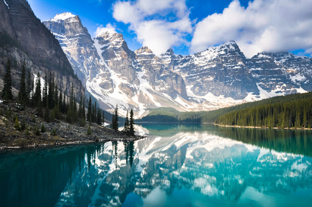
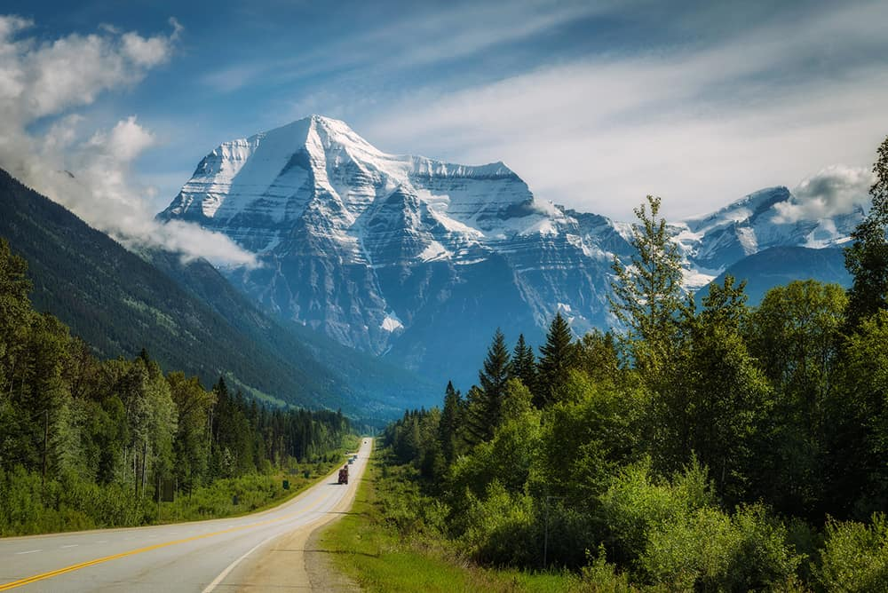

Some Landscapes

Lake Louise
Want a picture-perfect setting? Moraine Lake is the place to be. Located in Banff National Park, it has turquoise blue water and is surrounded by huge, snow-capped mountains. Five square kilometers in size, it is formed by glacial waters, i.e. the melting of mountain glaciers. To enjoy the tour, you can walk along the shore, go kayaking or climb up to a nearby lookout point for a panoramic view.
Learn More

Monte Robson
At an altitude of 3,954 meters, this mountain is a striking sight in the British Columbia region. It is in the Monte Robson Provincial Park, which has more than 2,000 square kilometers of mountains, crystal blue lakes, forests and waterfalls. In summer, you can go hiking, rafting, mountain biking and horseback riding, as well as fishing, boating, swimming and playing golf. Winter brings totally different possibilities, such as skiing, snowboarding, ice skating, sleigh rides and more.
Learn More
Niagara Falls
This true natural wonder couldn't be left off the list. 130 kilometers from Toronto and right on the border between Canada and the United States, this set of waterfalls is absolutely stunning at any time of year, even frozen! You can see them on foot, but also by helicopter or boat.
Learn More